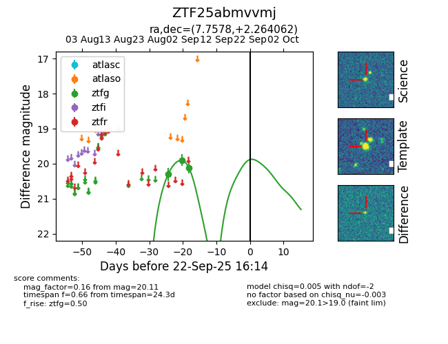
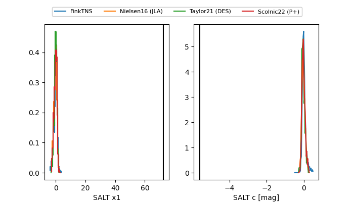

FINK: ZTF25abmvvmj
Lasair: ZTF25abmvvmj
ALeRCE: ZTF25abmvvmj
ZTF25abmvvmj (ztf,fink)
equatorial (ra, dec) = (7.7578,+2.26406)
galactic (l, b) = (112.6329,-60.19898)


last ztfg=20.11
3 ztfg detections